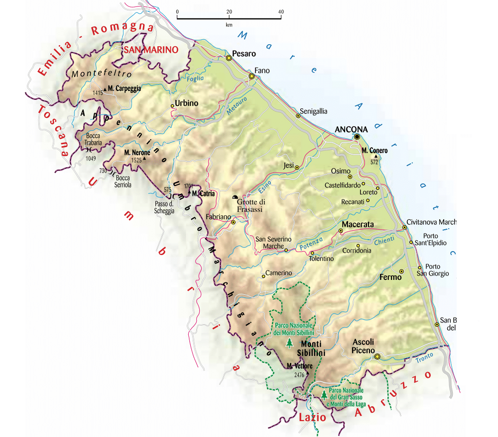
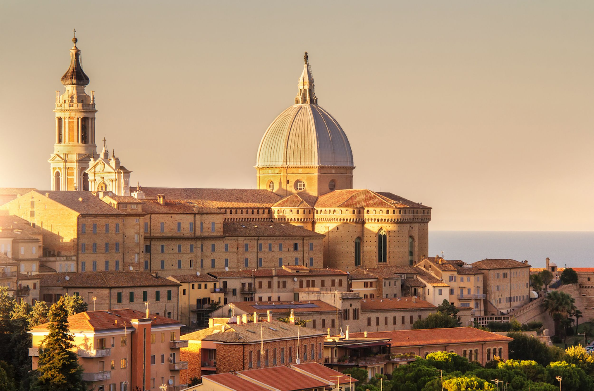

| Nome |
Marche |
| Capoluogo |
Ancona (AN) |
| Data di Istituzione |
1948 |
| Altitudine media |
343 m.s.l.m |
| Superficie |
9344 km^2 |
| Abitanti (luglio 2023) |
1.478.870 |
| Densità |
158 ab/km^2 |
| Comuni |
225 |
| Province |
Pesaro-Urbino (PU), Macerata (MC), Fermo (FM), Ascoli Piceno (AP) |
| Confini |
Abruzzo, Emilia-Romagna, Lazio, Puglia, Toscana, San Marino, Umbria, Mar Adriatico |
| Patrono |
Maria Santissima di Loreto |
| PIL procapite (2017) |
26.800€ |
Posto da visitare assolutamente: Santuario di Loreto - Loreto (AN)
Il Santuario della Santa Casa di Loreto,
comunemente noto come il Santuario di Loreto,
è uno dei luoghi di pellegrinaggio più importanti e
venerati del mondo cristiano cattolico.
Si trova nella città di Loreto, nella regione delle Marche,
in Italia. Ecco alcuni dettagli significativi su questo santuario:
Origini della Santa Casa:
La leggenda e la tradizione cattolica sostengono che la Santa Casa di Loreto
sia la casa di Maria, la madre di Gesù,
trasportata miracolosamente dagli angeli da Nazareth a Loreto nel 1294.
La Santa Casa è considerata un luogo sacro e una reliquia importante.
Struttura del Santuario:
Il Santuario di Loreto è composto dalla Basilica della Santa Casa,
costruita intorno alla Santa Casa stessa.
La Basilica è stata progettata da alcuni degli architetti
rinascimentali più importanti, tra cui Bramante e Sansovino.
La struttura è nota per la sua eleganza e il suo stile architettonico
rinascimentale.
La Santa Casa:
La Santa Casa è alloggiata all'interno della Basilica ed è una piccola
struttura in pietra calcarea.
È posta al centro di un grande muro di cristallo all'interno della basilica,
permettendo ai visitatori di vederla senza entrarvi.
La tradizione vuole che la Santa Casa sia stata la casa in cui Maria è
stata annunciata dall'arcangelo Gabriele e dove Gesù è cresciuto.
Pellegrinaggi:
Il Santuario di Loreto è uno dei principali luoghi di pellegrinaggio mariano.
Ogni anno, migliaia di fedeli visitano il santuario per pregare e venerare
la Santa Casa. Il periodo di maggiore afflusso di pellegrini è
durante il mese di settembre, quando si celebra la
festa della Natività della Vergine Maria.
Tesoro del Santuario:
Il Santuario di Loreto ospita un ricco tesoro, che include opere d'arte,
reliquie, paramenti sacri e oggetti liturgici.
Questi tesori sono esposti nel Museo del Tesoro del Santuario,
che è visitabile dai pellegrini e dai turisti.
Piazza della Madonna:
Di fronte alla Basilica si estende la Piazza della Madonna,
che è un luogo di incontro e riflessione per i visitatori.
La piazza è circondata da portici e negozi che vendono oggetti religiosi.
Influenza storica e culturale:
Il Santuario di Loreto ha avuto un impatto significativo sulla cultura
e sulla storia religiosa dell'Italia.
La sua importanza è testimoniata dalla presenza di numerosi sovrani,
papi e figure religiose illustri che hanno visitato il santuario
nel corso dei secoli.
Il Santuario di Loreto è dunque un luogo sacro che attira fedeli e
visitatori da tutto il mondo, rappresentando un importante centro di
spiritualità mariana nella tradizione cattolica.
